Síntese - Aula de Hyperlinks
➪ O que é um Hyperlink?
É uma referência na qual cada usuário pode interagir diretamente através do clique, toque ou até mesmo passando o mouse durante a navegação.
Os hiperlinks criam ligações e estabelecem vínculos entre endereços na web, criam pontes de ligação entre documentos, direcionam até partes específicas dentro do próprio documento HTML dentre outras funções.
Sintaxe padrão de um Hyperlink:
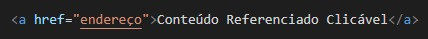
➪ Hyperlinks Remotos
Hyperlinks remotos, ou também chamados de externos, são links que referenciam a sites ou páginas da web.
No atributo href, indicaremos a página na qual o link vai redirecionar através da URL (Uniform Resource Locator), como por exemplo, ao site <https://www.google.com.br>
Para isso, utilizaremos da seguinte sintaxe padrão:
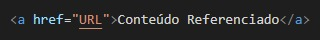
Por exemplo:
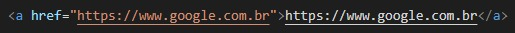
Atributos que podem ser utilizados:
- target: Define onde a página será aberta atráves de dois valores possíveis:
- _blank: O link abre em um nova aba.
- _self: O link abre na própria aba que está sendo visualizada a página HTML. Além do mais, caso o atributo não venha a ser declarado, ele assume este valor padrão!
- rel: Define o tipo de link que está sendo utilizado, neste caso, o valor é external. Porém, para outros tipos de links, o valor desse atributo será diferente. Para ter mais informações sobre os valores desse atributo, acessar esse site!
- hreflang: Define o idioma da página que está sendo referenciada no link, com o intuito de preparar o navegador e, caso esteja em inglês, por exemplo, o navegador abre a possibilidade para o usuário, caso ele deseje, de realizar a tradução da página. Alguns valores possíveis seriam:
- pt-BR: Português Brasileiro
- es-ES: Espanhol da Espanha
- en-GB: Inglês Britânico
- fr: Francês
- Para saber mais sobre o assunto e sobre como funcionam os códigos, recomendo esse site que comenta sobre o ISO 639 e sobre o ISO 3166-1 alpha-2
Assim, para exemplificarmos o uso desses atributos, podemos utilizar-se do seguinte comando:
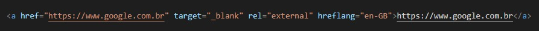
➪ Links Internos
São links que apontam a um lugar diferente dentro da mesma página e quem possibilitam acessar diferentes parágrafos e seções quando o documento é extenso.
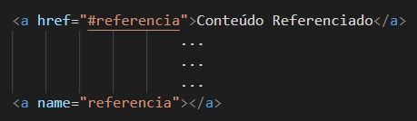
Como exemplo, podemos ter o seguinte código:
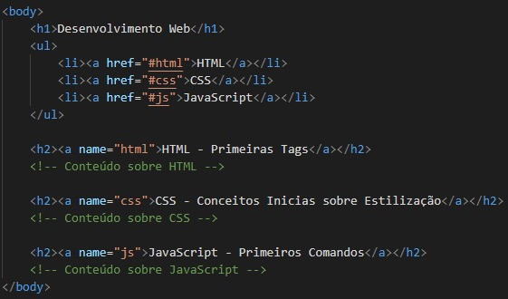
➪ Hyperlinks Locais
São links que apontam para outras páginas dentro de um mesmo site.
Sua sintaxe padrão seria:
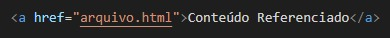
Como exemplo, suponhamos que um site precisa ter um link que permita o usuário retornar à página inícial, assim que desejar. Portanto, podemos ter:
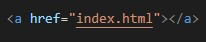
➪ Hyperlinks em Imagens
É possível realizar hiperlinks envolvendo a tag de imagem com a tag de hiperlink.
Sua sintaxe básica, poderia ser:
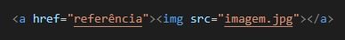
Como exemplo, podemos ter a seguinte situação:
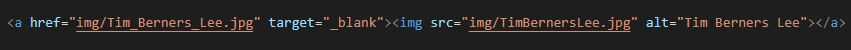
Note que as imagens são diferentes!
Na prática, o exemplo ficaria da seguinte forma:

➪ Hyperlinks para Download de Arquivos
São links que apontam para arquivos e possibilitam realizar o download destes arquivos.
Para a utilização deste tipo de link, faz-se necessário seguir-se a seguinte sintaxe:
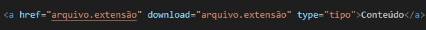
Para a exemplificação, utilizarei um arquivo compactado referente a atividade Meu Hobbie, que fora desenvolvida anteriormente para a disciplina, cujo nome do arquivo é atividade-Aula07[GabrielEmanuel].zip
Para o atributo type, também conhecido como Media Types, é um identificador padrão utilizado na Internet para indicar o tipo de dado de um arquivo. Neste caso, por se tratar de um arquivo compactado em formato .zip, utilizaremos o valor application/zip.
Consequentemente, caso você escolha, por exemplo, uma foto e queira disponibilizar para o usuário efetuar o download, o valor para o atributo type será diferente. Assim, pode-se consultar mais valores possíveis através do site Media Type.
Sendo assim, podemos ter o seguinte código:
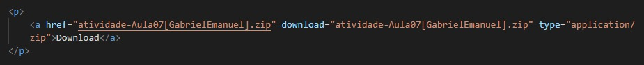
Na prática, temos o seguinte:
➪ Hyperlinks para Endereço Eletrônico
São links que apontam para um email
Utilizam a seguinte sintaxe:
ATENÇÃO: É necessário o uso da sintaxe "mailto:" antes de definir o endereço eletrônico
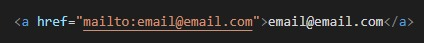
Para ficar mais prático, vamos a um exemplo:
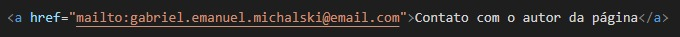
Na prática, o link ficaria assim:
➪ Sobre o autor...
- Autor: Gabriel Emanuel
- Contato: gabriel.emanuel.michalski@gmail.com
- Atualmente cursando o 3° ano técnico em Informática no Instituto Federal de Irati
- Professor: Francis Baranoski
- Data: 06/08/2021